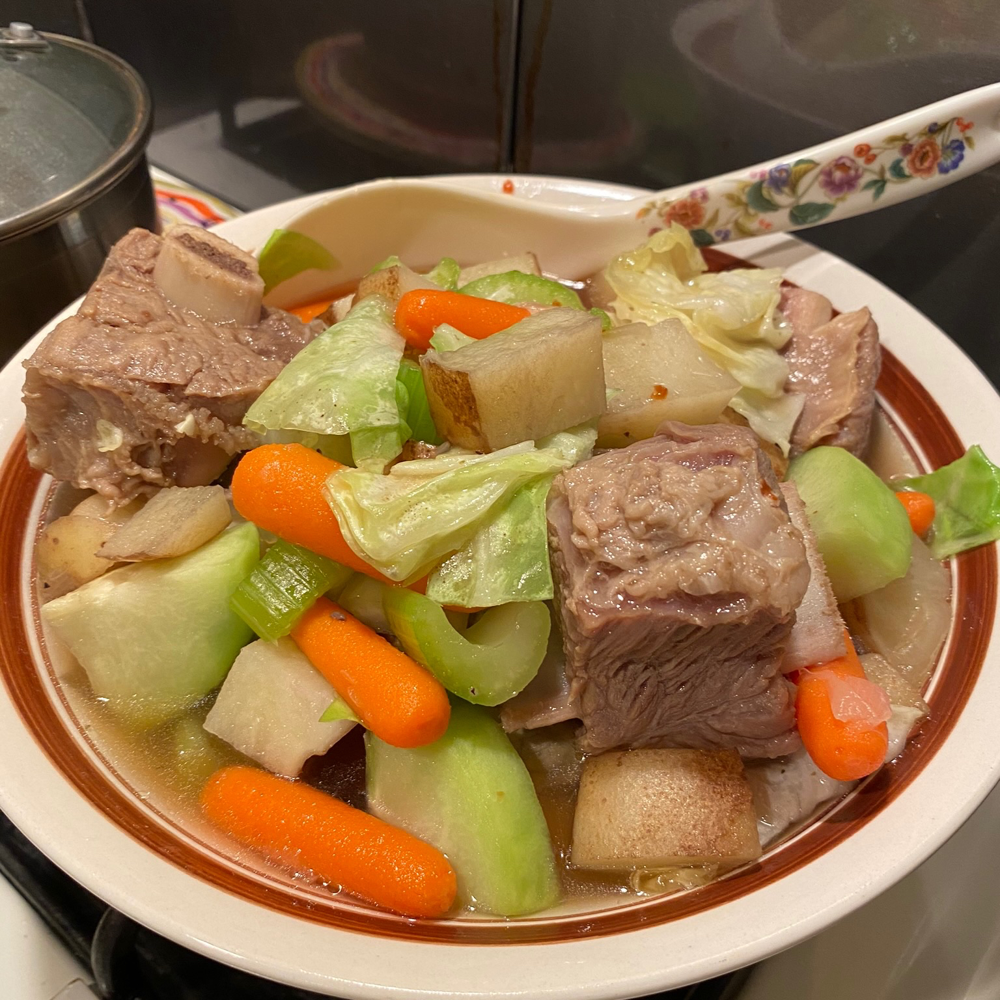

Beef Nilaga

A classic comfort food for all Filipino households.
This dish is a stew made from beef and other vegetables and is a delight to consume and very easy to make.
Ingredients
- 4.5 pounds beef short ribs
- 1 quart water
- 1 tbsp black peppercorns, crushed
- 2 onions, chopped
- 2 beef bouillon cubes
- 2 carrots, cut in chunks
- 2 stalks celery, quartered
- 1 chayote squash, peeled and quartered
- 2 potatos, quartered
- 1/4 head of cabbage, cut into wedges
- salt, to taste
Directions
- Blanch the beef. Place beef ribs in a pot with enough cold water to cover.
Bring this to a boil over high heat and allow to boil for 5 minutes. Drain and discard the water.
- Make the stew. Return the beef to the pot and add in the 1 quart of water, peppercorns, onions, and beef bouillon cubes.
Bring this to a boil then cover, reduce the heat, and allow to simmer for 1 hour.
- Add in the vegetables. Skim any fat off the surface. Stir in the carrots, celery, chayote, and potatoes. Cover and allow to simmer until the potatoes are tender, about 20 minutes.
Season with salt. Add cabbage and cook for an additional 5 minutes.